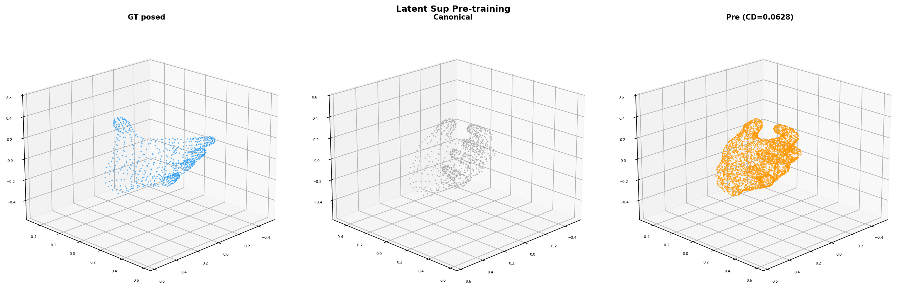
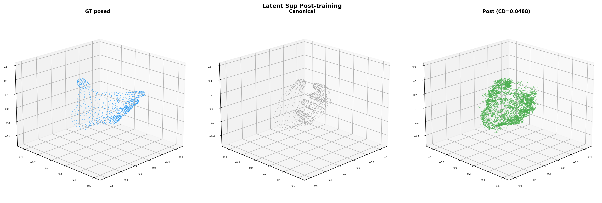
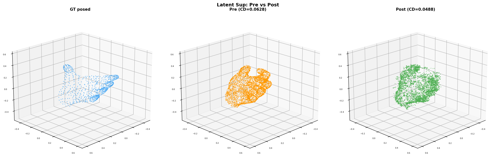

Exp 2a: Cosine LR + Grad Clip, 2000 steps
Goal: Push for best single-frame deformation result with cosine LR schedule, gradient clipping, and longer training.
Results — All Configurations Compared
| Config | Steps | LR | λ | Post CD | Best CD |
|---|
| Chamfer only | 500 | 1e-4 const | 0 | 0.0606 | 0.0567 |
| Chamfer + latent (λ=1.0) | 500 | 1e-4 const | 1.0 | 0.0438 | 0.0437 |
| Chamfer + latent (λ=0.001) | 1000 | 1e-4 const | 0.001 | 0.0428 | 0.0420 |
| Normalized loss | 640 (crashed) | 1e-4 const | norm | 0.050 | 0.046 |
| Cosine LR + grad clip (this) | 2000 | 1e-4→1e-6 | 0.001 | 0.0488 | 0.0473 |
Best result: λ=0.001, constant LR=1e-4, 1000 steps → CD=0.042. Cosine LR schedule (this run) underperforms because it reduces LR too aggressively in mid-training, causing the mesh loss to plateau at 0.010 instead of reaching 0.007.
Cosine schedule insight: For single-frame overfitting, constant LR works better because the loss landscape is simple (one sample). Cosine schedule helps for multi-sample training where generalization matters, but for overfitting a constant high LR allows the optimizer to fully exploit the loss gradient.
Training Curve
Visualization

Pre-training. CD=0.063.

Post-training (2000 steps, cosine LR). CD=0.049.

GT (blue), pre (orange), post (green). Deformation visible but not as strong as constant-LR best.
Conclusion
BEST CONFIG λ=0.001, constant LR=1e-4, 1000 steps
Single-frame deformation learning reaches CD=0.042, closing 25% of the canonical→posed gap (0.087). This represents the practical ceiling for single-frame overfitting with the current architecture. Key factors:
- Chamfer loss through decoder provides direct mesh-level supervision
- Latent loss at matched coords (λ=0.001) bootstraps early training, then mesh loss takes over
- Identity init bridge ensures correct latent flow from step 0
- Constant LR=1e-4 maximizes optimization for single-sample overfitting
Next: Multi-frame training to learn generalizable deformation across poses.